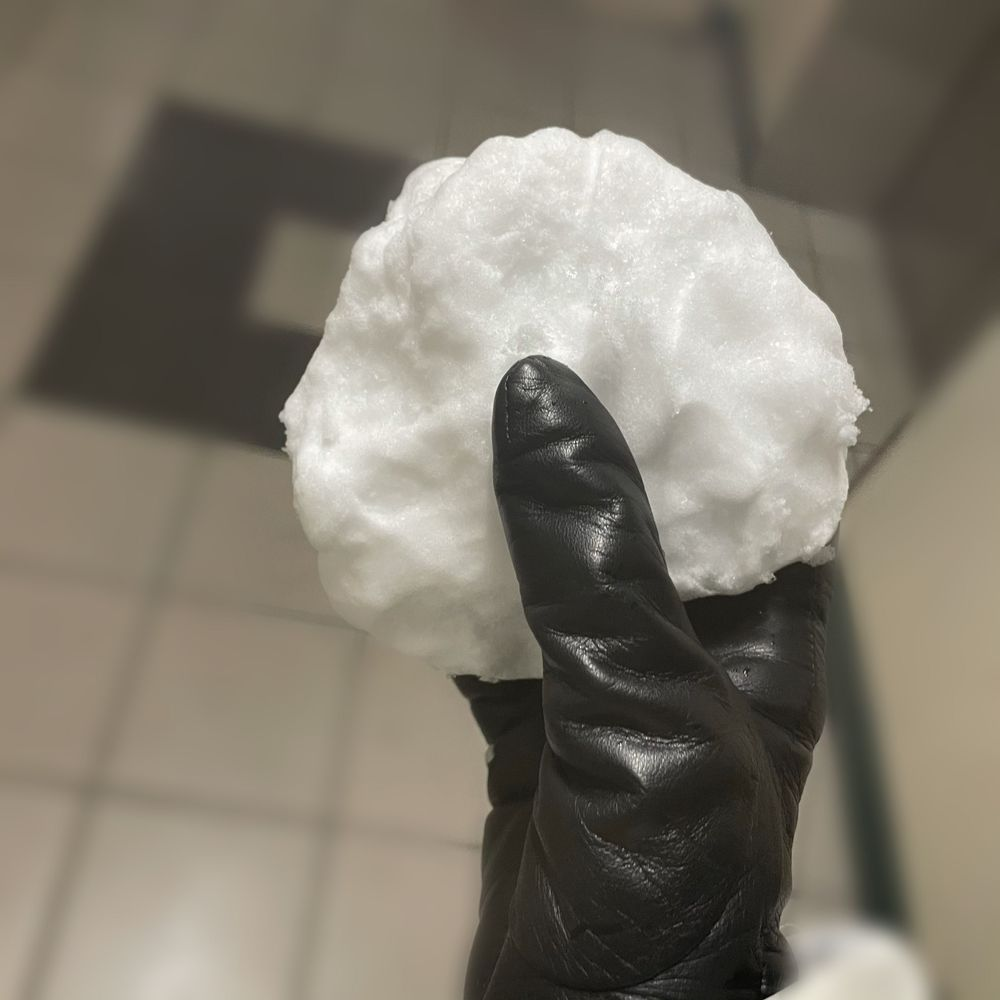

올 겨울에 눈이 생각보다 많이 왔었는데 오늘 처음으로 눈 내릴때 내가 밖에서 그 눈을 구경하고❄️하얗게 쌓인 눈 위를 발로 밟고 다녔어🥺🥺
나 눈 좋아해서 그동안 얼마나 이 눈을 보면서 놀고 싶었다구 오랜만에 이런 여유로운 시간 너무 좋다☺️❣️
룰루랄라 걷다가 집에 돌아오는 길에 눈 내린거 뭉쳐서 동그랗게 만들고 엄마한테ㅋㅋㅋㅋㅋㅋㅋㅋ오다가 찐빵 사왔다고ㅋㅋㅋ뜨거울때 먹어!!! 이랬더니 엄마가 멀리서 보고 응~~☺ 이러는거야ㅋㅋㅋㅋㅋㅋ 그래서 혼자 빵 터지고ㅋㅋㅋㅋㅋㅋㅋ 그대로 나의 차가운 눈 찐빵은 싱크대에 버려졌지🙃
정말 즐거운 인생
내 찐빵 구경할래? 너무 뜨거워서 김 날 지경이야
